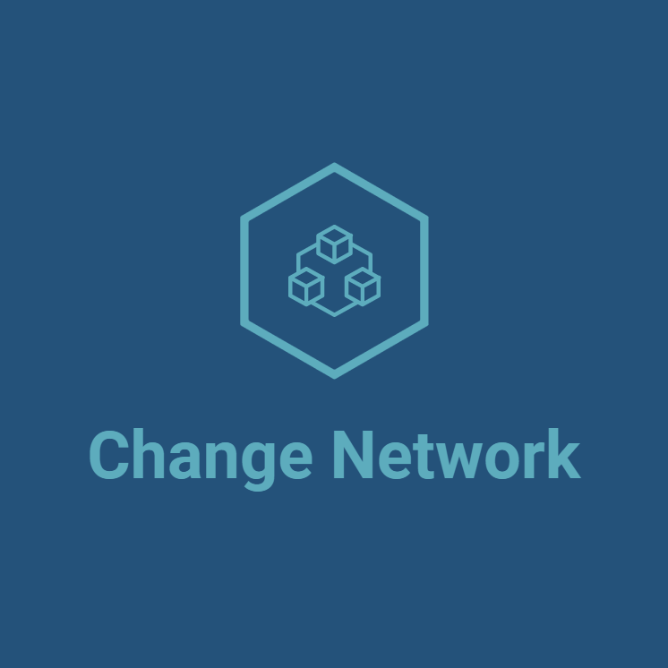

<!--  -->
<div class="back">
    <h1>You are connected to the wrong Network</h1>
    <p>Please use the button below to switch to Fuji Network</p>
    <!--  -->
    <button mat-raised-button type="button" (click)="changeNetwork()">Switch network</button>
</div>